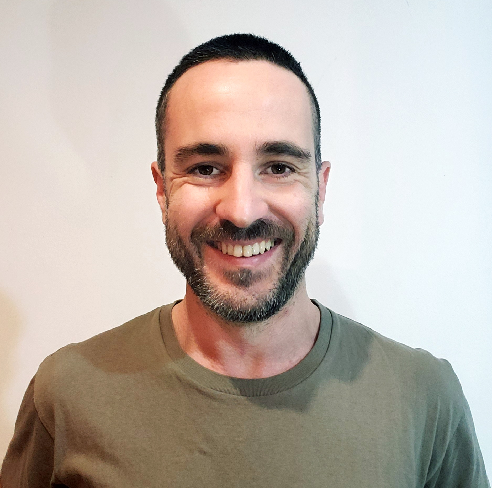

curriculum vitae matias sebastian marello

sobre mi
Datos personales
- Nombre completo: Matias Sebastian Marello
- Fecha de nacimiento: 26/11/1984
- Lugar de nacimiento: Bahia Blanca
Formacion academica
- 1996-2000: secundario: Escuela Superior de Comercio
- Bachiller en economia y administracion
Experiencia laboral
- 2003-2006: Vendedor ¨Drogueria Insumos¨
- venta de insumos medicos y medicamentos en farmacias y hospitales
2006-2010: Tecnico ¨taller Omega¨-
- Reparacion y mantenimiento de transformadores electricos. Instalacions de centrales
telefonicas y alarmas domiciliarias
2010-a la actualidad: Estacionamiento ¨El trebol¨ (emprendimiento propio)-
- Emprendimiento en sociedad. Estacionmiento de alta rotacion en la ciudad de Bahia
Blanca
2013-2016: Constructor Natural-
- Desarrollo de tecnicas de construccion edilicia utilizando elementos naturales.
Habilidades blandas
- 2015-2019: Formacion en tecnicas teatrales
- Inicio formacion de teatro, tecnicas de movimiento y expresion corporal
- 2020 - a la actualidad: Coordinador de grupos de teatro
- Coordino grupos iniciales de formacion teatral y tecnicas de improvisacion.